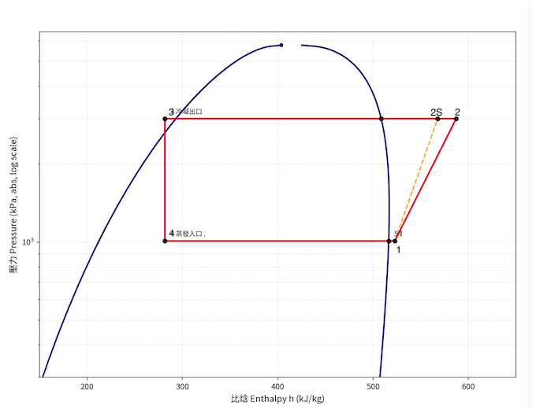

研究組員：李世權 Gemini Claude
蒸汽壓縮制冷系統 (Vapor Compression Refrigeration System, VCRS) 為 HVAC (Heating, Ventilation, and Air Conditioning 通風空調系統) 與冷凍工程領域最核心的逆向熱力循環。$P-h$ 圖 (壓焓圖) 是空調與冷凍工程師在實務設計與狀態查核時最常用、最直觀的工具。
在 $P-h$ 圖中，縱軸代表絕對壓力 $P \text{ (kPa 或 Bar)}$（實務上常採用對數座標 $\log P$），橫軸代表比焓 $h \text{ (kJ/kg)}$。其幾何特點為：定壓過程呈水平線，等焓過程呈垂直線，且線段在橫軸上的投影長度直接代表系統各元件之單位質量熱量轉移量或做功量（$\Delta h = h_{\text{out}} - h_{\text{in}}$）。
下圖展示冷媒在理想與含有壓縮損失之 $P-h$ 壓焓圖上的軌跡。圖中包含鐘形飽和界線（液相線與氣相線）、等熵壓縮線 $1 \rightarrow 2s$、實際壓縮線 $1 \rightarrow 2$、定壓冷凝線 $2 \rightarrow 3$、等焓節流線 $3 \rightarrow 4$ 與定壓蒸發線 $4 \rightarrow 1$：

在 $P-h$ 圖中，瞭解等熵壓縮線的傾斜規律以及節流垂直線的物理意義，是分析系統能效與熱力過程的基石。
根據熱力學第一與第二定律之基本關係式（吉布斯關係式 Gibbs Equation）：
當過程為等熵過程 ($ds = 0$) 時，$T \, ds = 0$，上式可改寫為：
將理論 $P-h$ 圖與提供之實際精確計算「圖 3.1 R-32 冷凍循環 P-H 圖」進行交叉比對，可釐清以下工程實務差異：
| 比較項目 | 全系統理想 VCRS 循環圖 | R-32 實際冷凍循環 P-H 圖（圖 3.1） |
|---|---|---|
| 壓縮過程 ($1 \rightarrow 2$) | 理想等熵壓縮 ($s_1 = s_2$)，沿等熵線升壓至點 $2s$。 | 包含不可逆損失與機械效率損失，實際過熱點 2 偏向右側 ($h_2 > h_{2s}$)，焓增加大。 |
| 等熵對照點 ($2s$) | 點 2 即為理想過熱點。 | 標註紫叉符號 $2s$（比焓約 $575 \text{ kJ/kg}$），作為計算壓縮機等熵效率之基準。 |
| 節流膨脹 ($3 \rightarrow 4$) | 理想等焓節流，為完全垂直之直線 ($h_3 = h_4$)。 | 點 3 到點 4 呈現一條完全垂直向下之線段（比焓維持約 $280 \text{ kJ/kg}$），驗證絕熱節流特性。 |
| 縱軸座標刻度 | 多採用線性壓力刻度 $P$。 | 採用對數座標系 ($\text{kPa, 對數座標}$)，跨越 $10^{-1}$ 至 $10^4 \text{ kPa}$，能更寬廣且精確地涵蓋低壓蒸發與高壓冷凝區。 |
圖 3.1 展現了真實冷媒 (R-32) 在 CoolProp / IAPWS 同源精確計算下的物性軌跡。其直觀的橫軸投影特性使工程師可直接透過圖上之比焓差算得單位冷凍能力與壓縮做功。
在 $P-h$ 圖上，理想與實際蒸汽壓縮制冷循環之四大過程如下：
在 $P-h$ 圖上，$\text{COP}_{\text{R}}$ 可直接由線段長度之比值計算求得：
以圖 3.1 之 R-32 冷凍循環精確數據進行讀數與能效算算：
計算結果：該 R-32 實際冷凍循環之壓縮機等熵效率為 73.3%，系統實際性能係數 COP 為 3.20。
工程技師照著以下步驟做，即可順利利用 $P-h$ 圖完成空調與冷凍系統之設計與診斷：
本報告全文採用查證等級標示制度：
查證等級：(3) 既有知識工程參考值（本報告屬理論推導與通用工程熱力學知識，實務設計時仍須與技師及適用標準逐項確認）。
讀者提醒：本文件係依據蒸汽壓縮制冷循環熱力學原理進行理論編寫。實際工程操作時，必須考慮真實冷媒（如 R-32, R-410A, R-134a）之偏離特性、管路壓降、過熱度與過冷度，請讀者務必親自持官方正版冷媒物性表與技師簽章規範核對驗證。